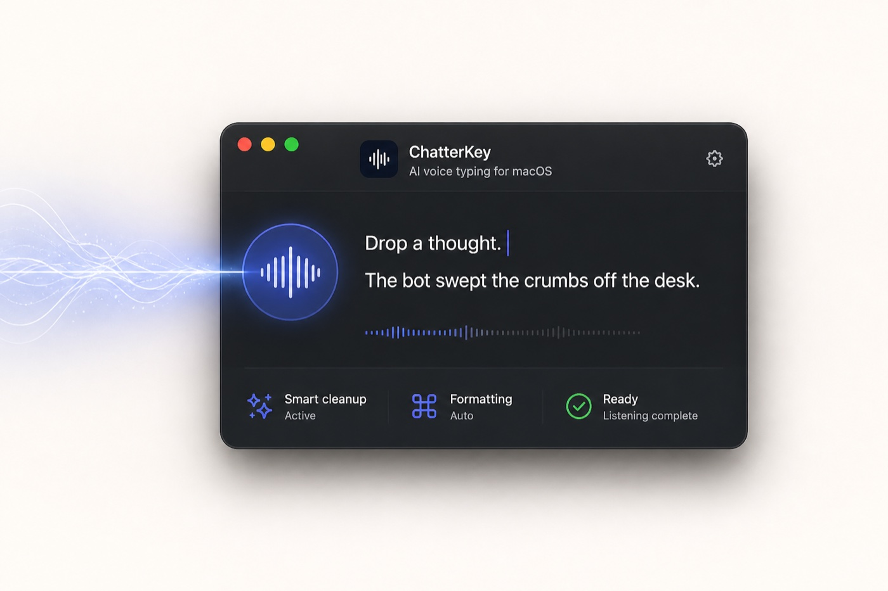

01
Hold and speak
Press your chosen shortcut and speak naturally in your own words and style.
“I need to send the client a clear update…”
Hold a shortcut and turn your voice into polished text in any Mac app, with personal vocabulary and reusable voice snippets built in.

No separate editor. No copy-paste ritual. No translating in your head before you speak.
Press your chosen shortcut and speak naturally in your own words and style.
ChatterKey transcribes, translates, cleans filler words, and applies your selected writing style.
Polished text is inserted directly into Slack, Mail, Notion, VS Code, browsers, and more.
ChatterKey does the small things that make voice typing genuinely useful every day.
Speak without stopping to edit every sentence in your head. ChatterKey preserves your intent while returning clear, natural writing in the style you choose.
“Tell the client the update should be ready tomorrow, make it professional.”
The client update will be ready by tomorrow.
Professional, concise, casual, technical, bullet points, verbatim, translation, and clean same-language output.
Say “my email” or “meeting intro” to expand reusable text exactly where you are typing.
Say “new paragraph,” “bullet point,” or punctuation commands and keep your hands on the keyboard.
Teach exact names, products, acronyms, and technical spellings once. Use them everywhere.
Use OpenAI, OpenRouter, or a custom compatible endpoint. Switch models whenever you want.
Your previous clipboard returns after dictation, without overwriting anything you copy next.
Dictate Slack updates, product notes, meeting summaries, and client emails without slowing down to translate or type.
Write prompts, documentation, GitHub issues, code review notes, and technical messages with identifiers preserved.
Speak rough ideas and transform them into outlines, posts, notes, or polished drafts.
Use voice snippets for standard answers, then personalize the rest naturally for each customer.
ChatterKey is an open-source Mac utility—not another account, subscription, or closed transcription service.
Bring your own API keyYour key stays in macOS Keychain.
No ChatterKey analyticsNo project-operated tracking or transcription backend.
Optional local historyTranscript history is off by default and audio is never stored there.
Audio is sent directly to the provider you select.
Speak naturally. Write confidently—anywhere on your Mac.
Free and open source · macOS 14+ · Bring your own API key